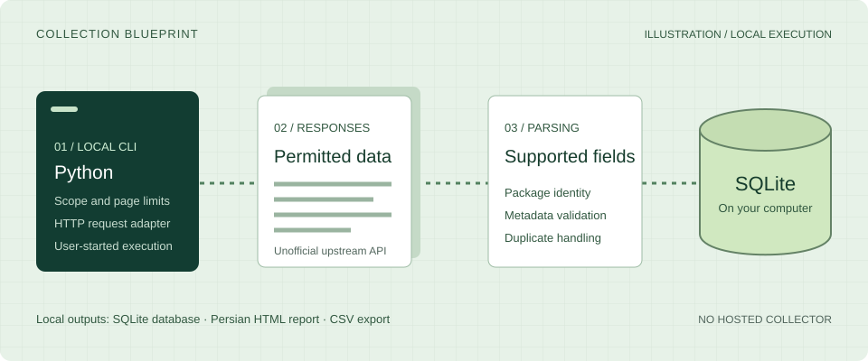

Get the source
git clone https://github.com/AlirezaBelal/cafebazaar-crawler.git
cd cafebazaar-crawlerUse a terminal on Windows, macOS, or Linux.
Independent software · Python + HTTP + SQLite
Collect permitted CafeBazaar app metadata with a local Python tool. Read supported HTTP responses, validate records, and keep the resulting SQLite database on your computer.
This website is a static product guide. It does not collect marketplace data or accept datasets.

A small tool with a clear purpose
CafeBazaar Crawler uses Python HTTP requests and an API-oriented adapter. It discovers categories and app listings, parses supported metadata, and writes records to SQLite.
You decide when it runs and which limits to apply. There is no hosted collector, account, or remote database to configure.
Read the technical scopeThe collection path
The real workflow runs in your terminal. The upstream API is unofficial and may change or become unavailable.
Confirm access permission. Set category, subcategory, successful-app, and per-path page limits.
The HTTP adapter handles supported responses with timeouts, retries, and repeated-page stopping.
Supported app details are stored by package and source in the local app_details table.
Generate a Persian RTL HTML report or formula-safe CSV from the database you control.
Built into the source
Useful controls for a deliberate local research workflow, with no claim of complete marketplace coverage.
Start with an offline run
Python 3.9 or newer is required. The offline demo uses the Python standard library and makes no marketplace requests.
git clone https://github.com/AlirezaBelal/cafebazaar-crawler.git
cd cafebazaar-crawlerUse a terminal on Windows, macOS, or Linux.
py -3 -m venv .venv
.\.venv\Scripts\python.exe src\main.py --demopython3 -m venv .venv
. .venv/bin/activate
python src/main.py --demoOpen data/demo-report.html. The demo creates twelve clearly fictional records. Choose a new --db path to run it again.
First confirm that your intended access and use are allowed. Install the network dependencies inside the virtual environment:
# Windows PowerShell
.\.venv\Scripts\python.exe -m pip install -r requirements.txt
# macOS / Linux, with the environment activated
python -m pip install -r requirements.txtUse the environment’s Python executable for this deliberately small example:
python src/main.py --category-limit 1 --subcategory-limit 1 --max-apps 3 --max-list-pages 1 --max-subcategory-pages 1These are not global request limits. The app limit counts successful saves; page limits apply separately per path. Retries can issue additional HTTP requests. Keep conservative delays and stop if access is refused.
The default database is data/cafebazaar_results.db. Running without arguments makes no network requests. --full explicitly enables an unbounded collection and should not be a first run.
python src/main.py --db data/my-run.db --report data/my-report.html
python src/main.py --db data/my-run.db --export-csv data/my-apps.csvReports and CSV are generated offline. Keep raw SQLite databases and logs private, and review their contents before sharing.
Responsible collection
Independent project. Not operated, endorsed, or officially supported by CafeBazaar.
Open source. Locally executed.
Start with the source, try the offline demo, and understand the limits before collecting.